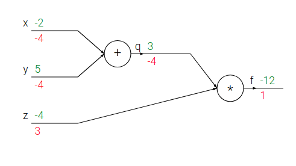
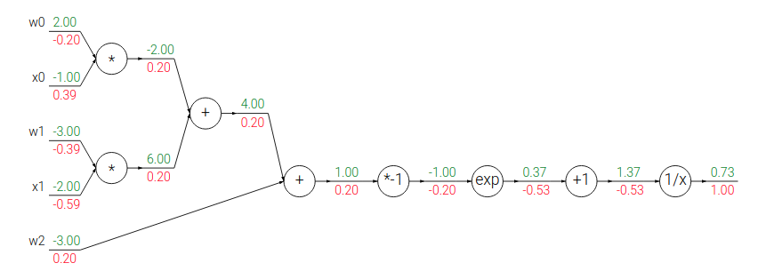
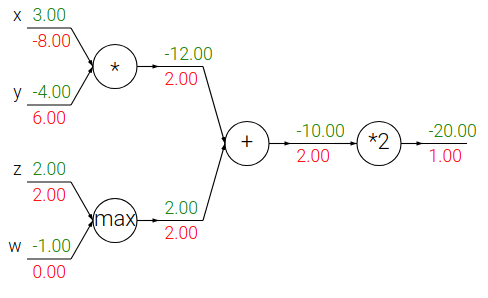

Backpropagation, Intuitions
目录
Introduction
Motivation 本文将介绍反向传播(backpropagation)的相关知识，主要是利用链式法 则(chain rule)来计算梯度值。理解和合理利用该方法是理解和设计神经网络的关键。
Problem statement 主要的问题形式是：根据得分函数 f(x) ， x 为输入向量， 运用链式法则来计算相关梯度 ∇ f(x) 。
Motivation 面向特定结构的神经网络， f 为对应的损失函数(L)，输入的参数 x 由训练数据和神经网络权值组成。例如：损失函数可以是 SVMLoss，输入为训练数 据(xi,ii for i = 1…N)和权值矩阵加偏置 W,b 。常常将输入数据为固定 值，权值矩阵和偏置是我们需要调整的对象。即使我们可以很容易的计算对于输入数据 的 (x_i) 计算梯度，实际中只会对参数(W,b)计算梯度，从而来更新实现损失函数 的降低。然后，后续我们会发现，对于输入数据求解梯度在可视化和神经网络工作原理 的解释很有作用。
Simple expressions and interpretation of the gradient
首先以一个简单的例子开始，考虑两个输入的乘法函数 f(x,y)=xy ，可以很快的计算 出对应的导数：
\begin{equation} f(x,y) = x y \hspace{0.5in} \rightarrow \hspace{0.5in} \frac{\partial f}{\partial x} = y \hspace{0.5in} \frac{\partial f}{\partial y} = x \end{equation}Interpretation 导数显示函数在某个点对应变量方向的变化率：
\begin{equation} \frac{df(x)}{dx} = \lim_{h\ \to 0} \frac{f(x + h) - f(x)}{h} \end{equation}当 h 非常小的时候，函数可以认为是一条直线，导数就是该直线的斜率。也即是说，微 分代表着变量对于该方向上变化的敏感程度。例如：如果 x=4,y=-3 那么 f(x,y)=-12 ，对于 x 导数为 \(\frac{\partial f}{\partial x}=-3\) 。这就表示如 果在 x 维度上增加一个很小的值，那么整个函数的值会减少(因为导数为负数)，并且 下降的数量为 3 倍于 x 维度上增加的量。重新调整上述等式(2) \(f(x+h)=f(x)+h\frac{df(x)}{dx}\) ， \(\frac{\partial f}{\partial y}=4\) ，可 以得知在 y 这个维度上增加一个微小的量 h ，那么整个函数的值将增加 4h 。
导数预示函数在各自数据维度的敏感度
梯度(∇ f)为偏导数向量，所以 \(\nabla f = [\frac{\partial f}{\partial x}, \frac{\partial f}{\partial y}] = [y, x]\) 。
同样可以对加法函数进行求导：
\begin{equation} f(x,y) = x + y \hspace{0.5in} \rightarrow \hspace{0.5in} \frac{\partial f}{\partial x} = 1 \hspace{0.5in} \frac{\partial f}{\partial y} = 1 \end{equation}对 x,y 求导结果无关于对应的变量值。这里很好理解，最后增加的结果都和对应变量 增加的量有关。
考虑一下 max 操作：
\begin{equation} f(x,y) = \max(x, y) \hspace{0.5in} \rightarrow \hspace{0.5in} \frac{\partial f}{\partial x} = \mathbb{1}(x >= y) \hspace{0.5in} \frac{\partial f}{\partial y} = \mathbb{1}(y >= x) \end{equation}偏导数告诉我们较大的变量的导数为 1，其他的为 0。例如： x=4, y=2 ，max 为 4，并 且结果对 y 的值不敏感。即对 y 增加一点点值，函数最后的输出还会保持为 4，因此对应的 导数为 0.但是不能对 y 变量增加太大的值（超过 2），这时函数的结果会改变。导数并不能 告诉我们增大如此大的值会对函数有什么影响；导数只是当前点的瞬间状态，如定义 limh → 0 。
Compound expressions with chain rule
那么复合函数如何进行求导，例如 f(x,y,z)=(x+y)z 。该表达式也非常简单，可以直接 计算出对应的导数，但是本部分将使用其他求导方法，该方法将有助于后续理解反向传播。 上述表达式可以拆成两部分； q=x+y 和 f=qz 。我们知道这两个表达式如何各自求导。 f 就是 q 和 z 的乘积，所以 \(\frac{\partial f}{\partial q} = z, \frac{\partial f}{\partial z} = q\) ， q 为 x 和 y 的加法，所以 \(\frac{\partial q}{\partial x} = 1, \frac{\partial q}{\partial y} = 1\) 。我们并 需要关心中间值 q 的导数，我们只关心最终的导数。链式法则(chain rule)告诉我们 正确的只需要将这些导数乘在一起即可。 \(\frac{\partial f}{\partial x} = \frac{\partial f}{\partial q} \frac{\partial q}{\partial x}\) ：
# set some inputs x = -2; y = 5; z = -4 # perform the forward pass q = x + y # q becomes 3 f = q * z # f becomes -12 # perform the backward pass (backpropagation) in reverse order: # first backprop through f = q * z dfdz = q # df/dz = q, so gradient on z becomes 3 dfdq = z # df/dq = z, so gradient on q becomes -4 # now backprop through q = x + y dfdx = 1.0 * dfdq # dq/dx = 1. And the multiplication here is the chain rule! dfdy = 1.0 * dfdq # dq/dy = 1
这个计算过程可以使用有向无环图来可视化：

上图显示了整个计算的可视化过程。正向传播过程(forward pass)根据输入的数字计算函 数的输出(绿色数值)。反向传播过程(backward pass)从函数的最终输出作为起点，递归 执行链式法则来计算各个节点的导数(红色数值)。导数的求解过程可以视作从后向前传播。
Intuitive understanding of backpropagation
反向传播是一个非常优美的局部过程。任意一个计算节点具有一些输入，作两种计算：1 正 向计算该计算节点的输出值；2 计算局部梯度。可以看出这些节点的计算过程是完全独立， 和计算图中的其他计算节点都没有关系。一旦向前传播完成计算，在反向传播过程中计算节 点将最终函数计算的梯度和局部梯度乘在一起就能得到该节点对于输入参数的梯度值。
重新思考一下上述例子：加法单元接受两个输入[-2,5]，计算输出值为 3.局部梯度都是+1。 剩下的乘积单元计算出最终的值 -12。在反向传播，加法单元的输出的值对于最终函数的梯 度为-4。如果最终的输出希望能够大一些，那么加法单元最后的输出值需要变小(因为梯度 为负)，且影响的量为 4 倍。继续向后传播，加法单元的将梯度-4 乘以局部梯度 1(对于输入 x,y 梯度都是 1*-4=-4)。这符合预期，即加法输入降低，那么会使得最加法单元的输出降 低，这会带来最终的输出变大。
反向传播可以看作是不同的计算单元对梯度信号的作用，从而确定本单元输入对最终的结果具有什 么样的作用。
Modularity: Sigmoid example
计算单元可以是任何可导函数，或者可以是很多单元组成的，或者将一个函数拆成多个计算 单元。例如：
\begin{equation} f(w,x) = \frac{1}{1+e^{-(w_0x_0 + w_1x_1 + w_2)}} \end{equation}后续会知道上述表达式代表着 2 维神经元(输入 x 和权值 w)，然后经过 sigmoid 激活函数。现在 将表达式只看作为一个函数，接收两个输入 w,x，最终计算的到一个输出。该函数有多个计 算单元组成：
\begin{equation} f(x) = \frac{1}{x} \hspace{1in} \rightarrow \hspace{1in} \frac{df}{dx} = -1/x^2 \\\\ f_c(x) = c + x \hspace{1in} \rightarrow \hspace{1in} \frac{df}{dx} = 1 \\\\ f(x) = e^x \hspace{1in} \rightarrow \hspace{1in} \frac{df}{dx} = e^x \\\\ f_a(x) = ax \hspace{1in} \rightarrow \hspace{1in} \frac{df}{dx} = a \end{equation}
图2 sigmoid 函数反向传播
上图 sigmoid function(σ (x)) 函数，根据输入 w,x 执行一系列计算。如下是 sigmoid 函数求导：
\begin{equation} \sigma(x) = \frac{1}{1+e^{-x}} \\\\ \rightarrow \hspace{0.3in} \frac{d\sigma(x)}{dx} = \frac{e^{-x}}{(1+e^{-x})^2} = \left( \frac{1 + e^{-x} - 1}{1 + e^{-x}} \right) \left( \frac{1}{1+e^{-x}} \right) = \left( 1 - \sigma(x) \right) \sigma(x) \end{equation}可以看出该函数的导数异常的简单。例如输入的为 1.0，则 sigmoid 的输出值为 0.73。局 部求导为 (1-0.73)*0.73~=0.2 。该计算过程为上图的后半部分求出的局部导数。在实际 应用中，一般将整个 sigmoid 函数的计算视作一个整体计算单元：
w = [2,-3,-3] # assume some random weights and data x = [-1, -2] # forward pass dot = w[0]*x[0] + w[1]*x[1] + w[2] f = 1.0 / (1 + math.exp(-dot)) # sigmoid function # backward pass through the neuron (backpropagation) ddot = (1 - f) * f # gradient on dot variable, using the sigmoid gradient derivation dx = [w[0] * ddot, w[1] * ddot] # backprop into x dw = [x[0] * ddot, x[1] * ddot, 1.0 * ddot] # backprop into w # we're done! we have the gradients on the inputs to the circuit
Implementation protip: staged backpropagation
像上述代码所示，一般将向前传播计算拆成多个部分，以便后续反后传播计算时使用。例如， 计算了中间值 dot ，保存 w,x 的点乘结果。在反向传播过程中，可以直接用来计算对 应的 sigmoid 局部导数 ddot 。
Backprop in practice: Staged computation
看另外一个例子：
\begin{equation} f(x,y) = \frac{x + \sigma(y)}{\sigma(x) + (x+y)^2} \end{equation}这个表达式直接求解导数结果较为复杂，但是并不需要直接来进计算对应的导数，只需要知 道如何利用链式法则一步一步计算导数即可。如下为正向传导：
x = 3 # example values y = -4 # forward pass sigy = 1.0 / (1 + math.exp(-y)) # sigmoid in numerator #(1) num = x + sigy # numerator #(2) sigx = 1.0 / (1 + math.exp(-x)) # sigmoid in denominator #(3) xpy = x + y #(4) xpysqr = xpy**2 #(5) den = sigx + xpysqr # denominator #(6) invden = 1.0 / den #(7) f = num * invden # done! #(8)
因为每一步的局部导数计算非常简单，所以计执行反向传播的过程只需要按着正向传播计算 过程(sigy,num,sigx,xpy,xpysqr,den,invden)反序计算即可。每个变量都会有一个 d 作 为前缀，为输出值关于对应变量的梯度。另外，下列代码每一块计算逻辑，都会先计算局部 导数，然后和梯度乘在一起。
# backprop f = num * invden dnum = invden # gradient on numerator #(8) dinvden = num #(8) # backprop invden = 1.0 / den dden = (-1.0 / (den**2)) * dinvden #(7) # backprop den = sigx + xpysqr dsigx = (1) * dden #(6) dxpysqr = (1) * dden #(6) # backprop xpysqr = xpy**2 dxpy = (2 * xpy) * dxpysqr #(5) # backprop xpy = x + y dx = (1) * dxpy #(4) dy = (1) * dxpy #(4) # backprop sigx = 1.0 / (1 + math.exp(-x)) dx += ((1 - sigx) * sigx) * dsigx # Notice += !! See notes below #(3) # backprop num = x + sigy dx += (1) * dnum #(2) dsigy = (1) * dnum #(2) # backprop sigy = 1.0 / (1 + math.exp(-y)) dy += ((1 - sigy) * sigy) * dsigy #(1) # done! phew
Patterns in backward flow
梯度反向传播的过程具有很好的解释性。例如：三个神经网络中最常用的计算单元 (add,mul,max)，所有都具有很简单的解释性。

简单的三个计算函数组成的计算流，用来解释三个简单函数的反向传播的作用。加和函数将 梯度分给各个输入。最大函数将梯度分给最大输入。乘法函数交换输入的值，然后乘以对应 的梯度。
从上图中，我们可以看出： add function 会将梯度分给所有的输入，而不管对应的输入值的大小。这符合加法函 数局部梯度为 1。在上图中，也可以看到加法的反向传播并不影响梯度。
max function 会对梯度进行分发。最大函数将梯度全部分给向前传播中具有最大值的变 量。这是因为对于最大值的局部梯度为 1.0，对于其他变量的局部梯度为 0.0。
multiply function 局部梯度为交换后的相关输入值。可以看到对于 x 的梯度 为-8.0=-4.0*2.0。
所以可以看到乘法函数中，如果两个输入的值，一大一小，那么小的输入局部梯度就为大的 输入值，大的输入局部梯度为小的输入值。在线性分类器中，得分为 WTxi ，表示 输入的数据会影响对应的权值的局部梯度。如果对输入的数据全部放大 1000 倍，那么梯度就 会放大 1000 倍，这个时候必须对学习率进行对应的缩小。这就是为什么对数据进行预处理 具有很大的作用。
Gradients for vectorized operations
上述的讨论都面向于单个变量，但是这些操作都可以很容易推广到向量纬度。但是需要额外 注意维度和转置操作。
Matrix multiply gradient 额外需要注意的是矩阵乘法：
# forward pass W = np.random.randn(5, 10) X = np.random.randn(10, 3) D = W.dot(X) # now suppose we had the gradient on D from above in the circuit dD = np.random.randn(*D.shape) # same shape as D dW = dD.dot(X.T) #.T gives the transpose of the matrix dX = W.T.dot(dD)
Tips: 对矩阵维度进行分析。计算矩阵乘法相关梯度时，并不需要记住求导的具体公式， 只需要在计算的时候，分析以下维度即可。例如：我们知道对于权值的梯度 dW 必须和 W 具有相同的维度，而且肯定是 X 和 dD 的乘积(因为面向变量时，dW=X*dD 或者 dD*X)。这里只有一个方法去得到相同维度的举证。例如 X 维度为[10,3]， dD 维度 为[5,3]。如果我们需要的 dW 和 W 的维度为[5,10]，那么只有一个乘法可以达到这 个维度 dD.dot(X.T) 。
Work with small, explicit examples 有时候直接在矩阵上作一些计算会非常不直观和 困难。推荐先以一个维度较小的例子开始，推导梯度的计算，然后推广到一般形式。
矩阵相关求导资料可参阅: 参考资料
Summary
- 本文解释了梯度的具体意义，梯度如何通过反向传播在计算图中进行传递
- 讨论了将计算分成多个部分，然后通过链式法则实现梯度的反向传播